1 / 10
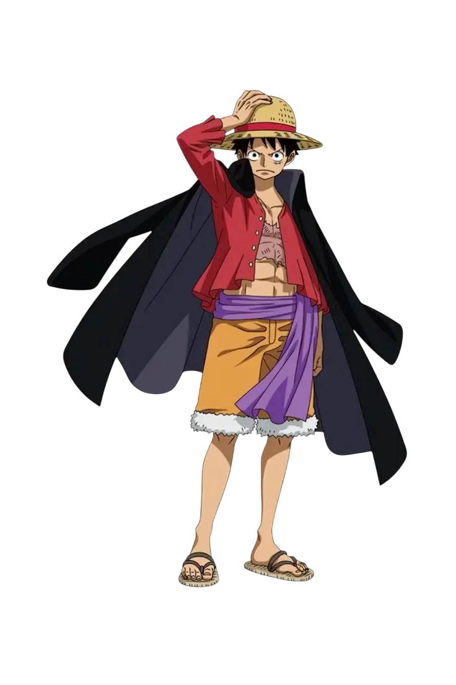
Monkey D. Luffy
Monkey D Luffy est le personnage principal du Manga, c'est un jeune pirate animé par une joie de vivre contagieuse et une détermination inébranlable. Il cherche à devenir le Roi des Pirates, pour devenir l'homme le plus libre du Monde. Il a mangé par inadvertence le fruit du démon Paramécia le rendant élastique devant son mentor Shanks qui lui léguera son chappeau de paille ayant appartenu à son capitaine Gol.D.Roger !
2 / 10
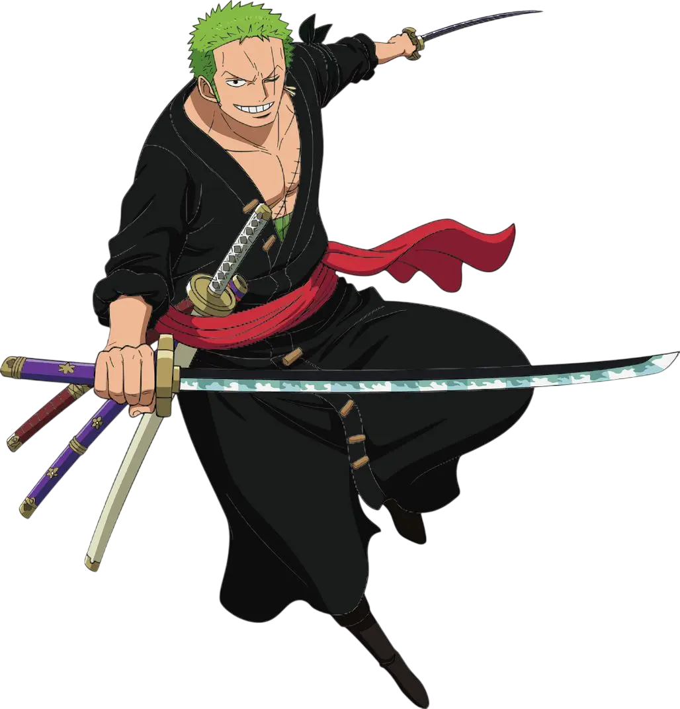
Roronoa Zoro
Roronoa Zoro est le sabreur, vice-capitaine de l'Equipage du Chappeau de Paille, c'est un guerrier stoïque, froid et discipliné qui s'entraîne sans relâche pour réaliser la promesse de devenir Le Meilleur Sabreur du Monde, à son amie d'enfance décédée. Ancien chasseur de pirates, il rejoint Luffy après avoir été sauvé d'une exécution injuste.
3 / 10
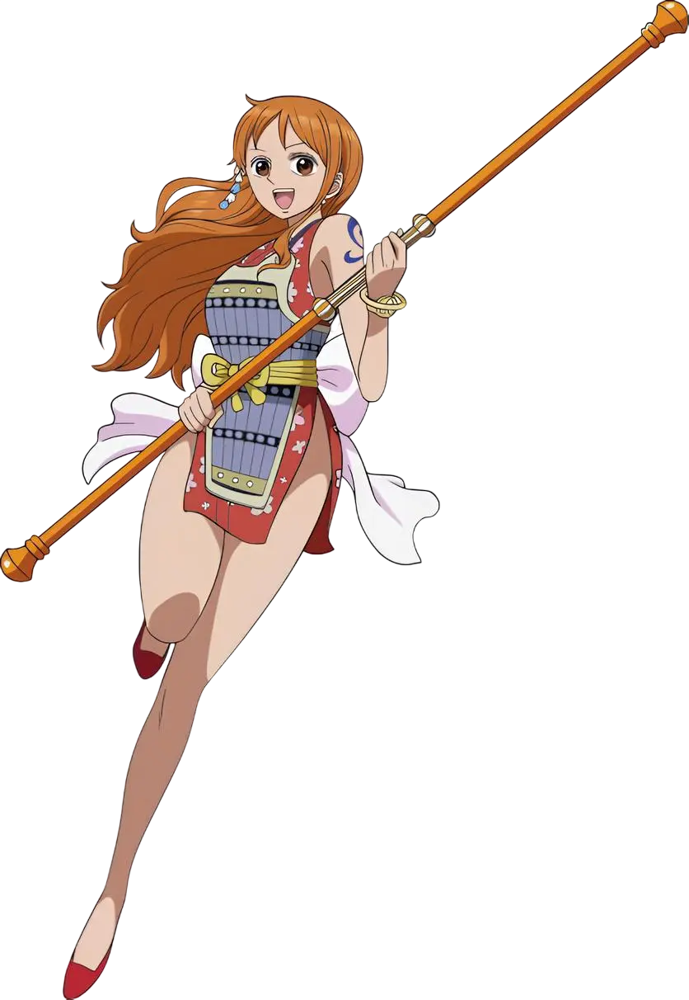
Nami
Nami est la navigatrice de l'Equipage ! Dotée d'un sens exceptionnel de la météorologie et de l'orientation ainsi qu'une d'une intelligence stratégique redoutable, elle est indispensable à la survie du groupe sur Grand Line. Son rêve est de dessiner une carte complète du monde ! Ancienne voleuse contrainte de travailler pour un tyran ayant réduit son village natale en esclavage.
4 / 10
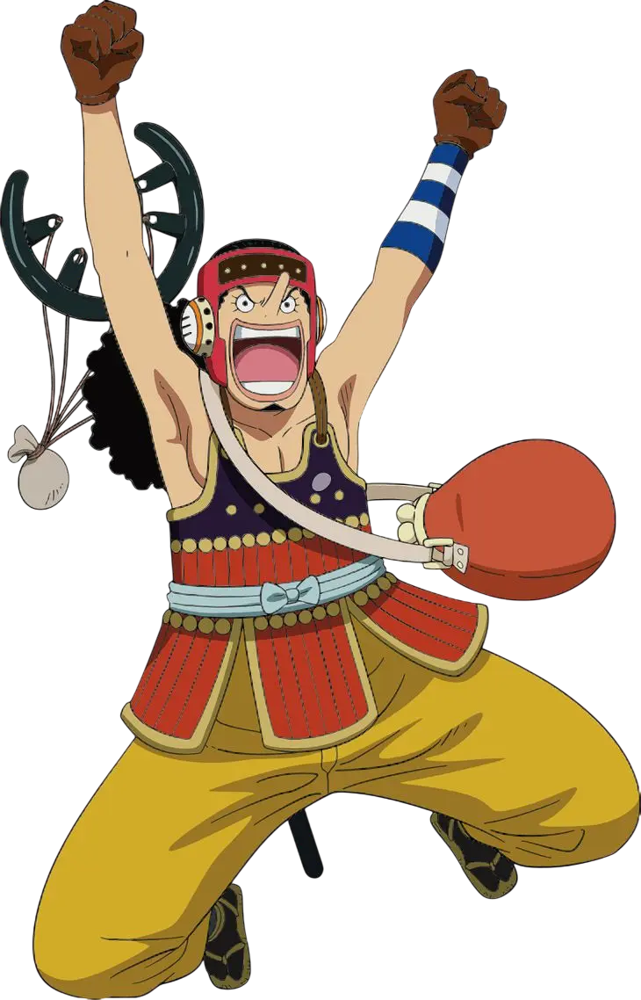
Usopp
Usopp est le tireur d'élite et le conteur de l'équipage, oscillant entre courage et panique. Son rêve est de devenir un brave guerrier des mers. Marqué par la maladie de sa mère, il a grandi en inventant des histoires pour tenir bon, développant une créativité débordante. Il utilise son génie artisanal pour créer armes, gadgets et munitions uniques.
5 / 10
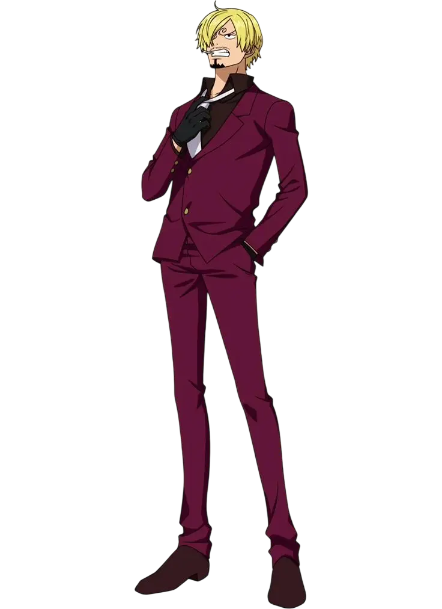
Vinsmoke Sanji
Sanji est le cuisinier de l'équipage, un maître du combat au pied et un gentleman passionné, s'étant promis de ne jamais blesser une femme qu'importe la situation. Son rêve est de trouver All Blue, la mer où se rencontrent tous les poissons du monde. Ancien élève du Baratie et rescapé d'un naufrage qui a marqué son enfance.
6 / 10
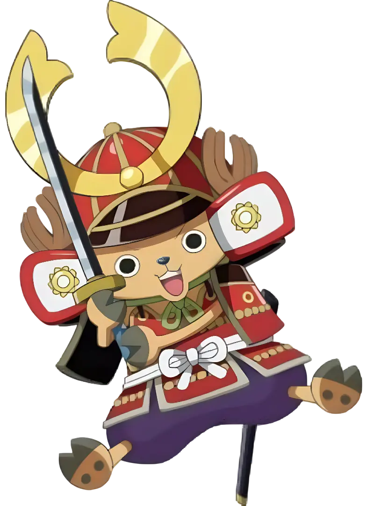
Tony Tony Chopper
Tony Tony Chopper est un renne ayant mangé le fruit Zoan de l'Homme, lui permettant de communiquer avec les autres humains. Recueilli par Dr Hiluluk qui lui a enseigné la médecine, Chopper s'est promis de trouver un remède contre tous les maux et maladies ! Aujourd'hui il est d'une grande aide pour l'équipage en soignant tous ses membres.
7 / 10
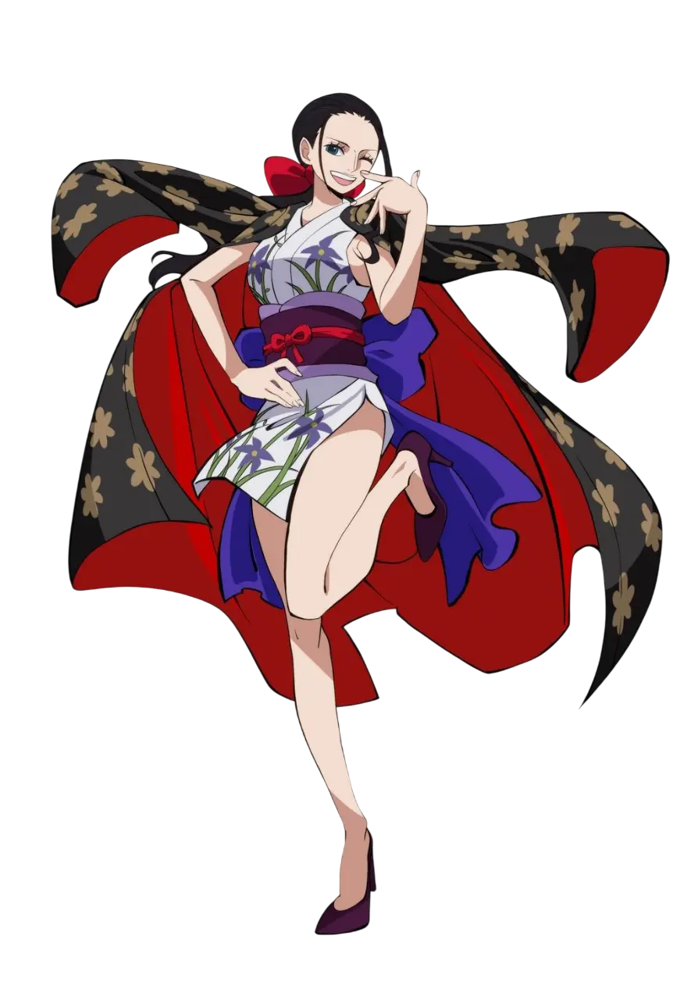
Nico Robin
Nico Robin est l'archéologue de l'équipage, une femme calme, cultivée, mystérieuse et dotée d'un humour noir aussi discret que tranchant. Son rêve est de découvrir la véritable histoire du monde en déchiffrant les Ponéglyphes. Seule survivante du génocide gouvernemental de l'île des historiens d'Ohara, Robin a passé toute sa vie pourchassée.
8 / 10
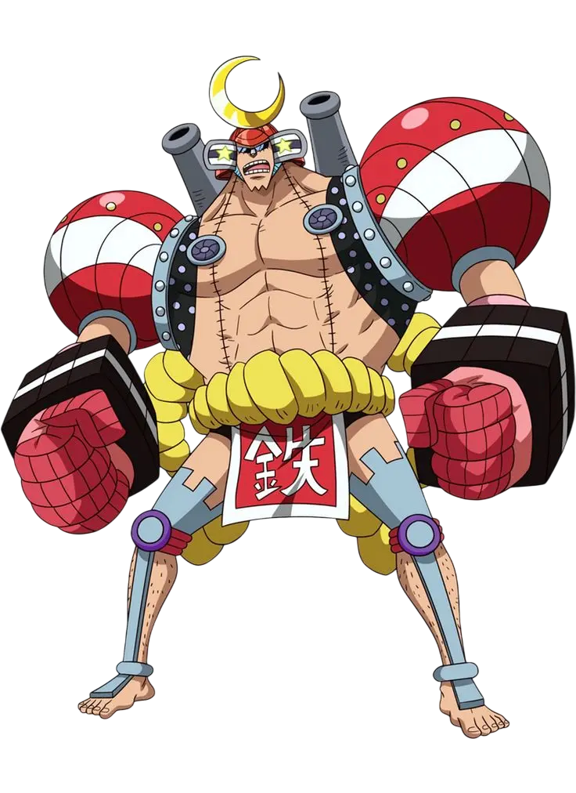
Franky
Franky est le charpentier cyborg de l'équipage, un génie excentrique qui vit au rythme de ses idées farfelues et de ses poses anthologiques. Son rêve est de construire un navire capable de faire le tour du monde. Il est le créateur du Thousand Sunny, un navire pensé comme une oeuvre d'art autant qu'une arme de guerre.
9 / 10
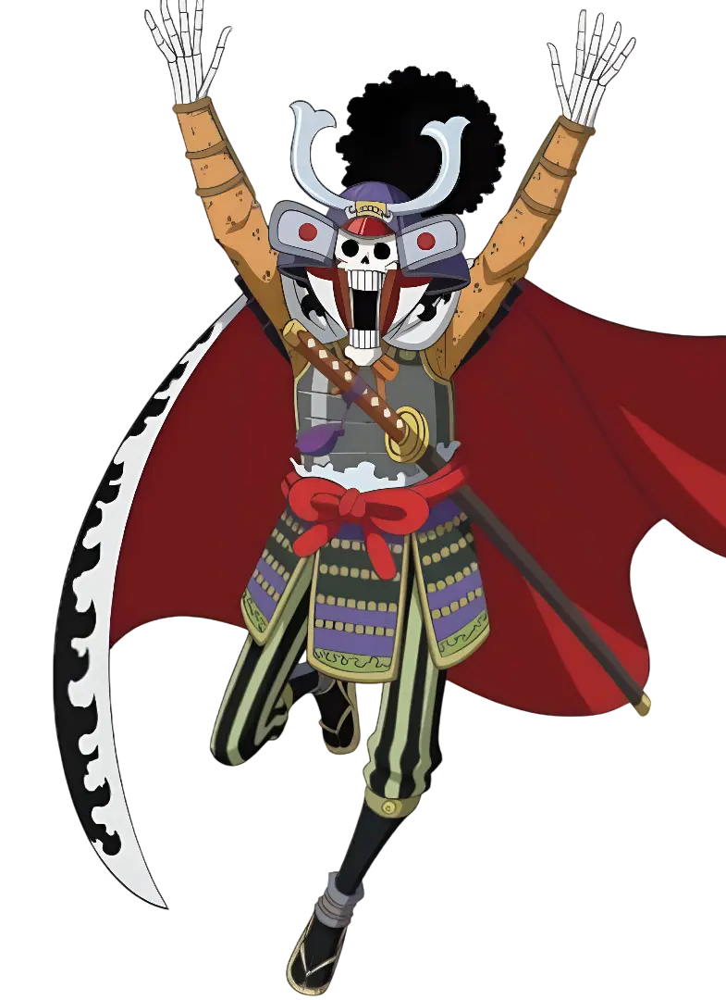
Brook
Brook est le musicien et épéiste de l'équipage, un squelette vivant au style élégant et à l'humour délicieusement douteux. Après sa mort et celle de son ancien équipage, son âme a vagabondé pendant un an dans le brouillard. Après sa résurrection il a erré seul pendant plus de cinquante ans. Son rêve est de retrouver Laboon, la baleine qu'il a laissée au Cap des Jumeaux.
10 / 10
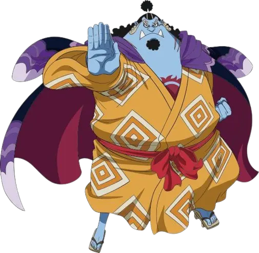
Jinbe
Jinbe est le timonier de l'équipage, un homme-poisson respecté pour sa sagesse, sa loyauté et sa force tranquille. Son rêve est de contribuer à une paix durable entre humains et hommes-poissons. Ancien capitaine des Pirates du Soleil et ancien membre des 7 grands corsaires. Maître du karaté homme-poisson, il est capable de manipuler l'eau comme une arme.
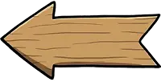
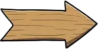